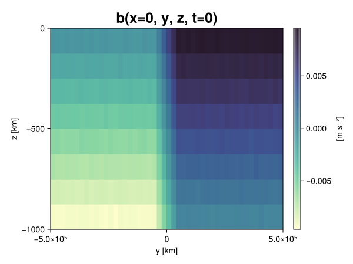
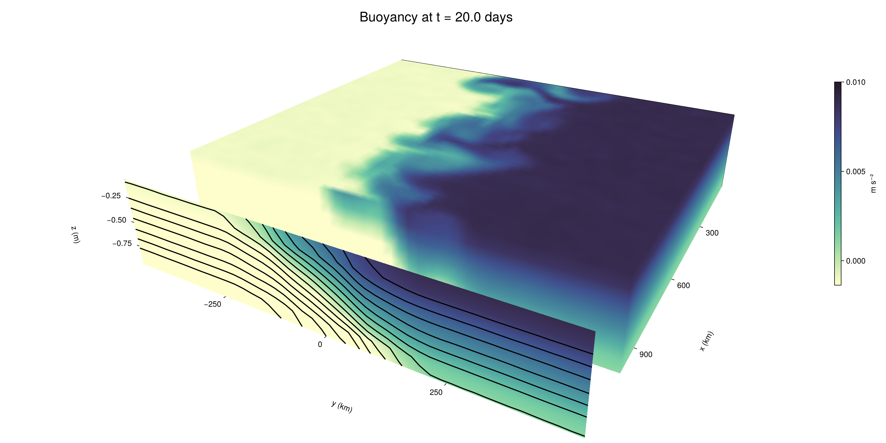

Baroclinic adjustment
In this example, we simulate the evolution and equilibration of a baroclinically unstable front.
Install dependencies
First let's make sure we have all required packages installed.
using Pkg
pkg"add Oceananigans, CairoMakie"using Oceananigans
using Oceananigans.UnitsGrid
We use a three-dimensional channel that is periodic in the x direction:
Lx = 1000kilometers # east-west extent [m]
Ly = 1000kilometers # north-south extent [m]
Lz = 1kilometers # depth [m]
grid = RectilinearGrid(size = (48, 48, 8),
x = (0, Lx),
y = (-Ly/2, Ly/2),
z = (-Lz, 0),
topology = (Periodic, Bounded, Bounded))48×48×8 RectilinearGrid{Float64, Periodic, Bounded, Bounded} on CPU with 3×3×3 halo
├── Periodic x ∈ [0.0, 1.0e6) regularly spaced with Δx=20833.3
├── Bounded y ∈ [-500000.0, 500000.0] regularly spaced with Δy=20833.3
└── Bounded z ∈ [-1000.0, 0.0] regularly spaced with Δz=125.0Model
We built a HydrostaticFreeSurfaceModel with an ImplicitFreeSurface solver. Regarding Coriolis, we use a beta-plane centered at 45° South.
model = HydrostaticFreeSurfaceModel(; grid,
coriolis = BetaPlane(latitude = -45),
buoyancy = BuoyancyTracer(),
tracers = :b,
momentum_advection = WENO(),
tracer_advection = WENO())HydrostaticFreeSurfaceModel{CPU, RectilinearGrid}(time = 0 seconds, iteration = 0)
├── grid: 48×48×8 RectilinearGrid{Float64, Periodic, Bounded, Bounded} on CPU with 3×3×3 halo
├── timestepper: QuasiAdamsBashforth2TimeStepper
├── tracers: b
├── closure: Nothing
├── buoyancy: BuoyancyTracer with ĝ = NegativeZDirection()
├── free surface: ImplicitFreeSurface with gravitational acceleration 9.80665 m s⁻²
│ └── solver: FFTImplicitFreeSurfaceSolver
├── advection scheme:
│ ├── momentum: WENO reconstruction order 5
│ └── b: WENO reconstruction order 5
└── coriolis: BetaPlane{Float64}We start our simulation from rest with a baroclinically unstable buoyancy distribution. We use ramp(y, Δy), defined below, to specify a front with width Δy and horizontal buoyancy gradient M². We impose the front on top of a vertical buoyancy gradient N² and a bit of noise.
"""
ramp(y, Δy)
Linear ramp from 0 to 1 between -Δy/2 and +Δy/2.
For example:
```
y < -Δy/2 => ramp = 0
-Δy/2 < y < -Δy/2 => ramp = y / Δy
y > Δy/2 => ramp = 1
```
"""
ramp(y, Δy) = min(max(0, y/Δy + 1/2), 1)
N² = 1e-5 # [s⁻²] buoyancy frequency / stratification
M² = 1e-7 # [s⁻²] horizontal buoyancy gradient
Δy = 100kilometers # width of the region of the front
Δb = Δy * M² # buoyancy jump associated with the front
ϵb = 1e-2 * Δb # noise amplitude
bᵢ(x, y, z) = N² * z + Δb * ramp(y, Δy) + ϵb * randn()
set!(model, b=bᵢ)Let's visualize the initial buoyancy distribution.
using CairoMakie
# Build coordinates with units of kilometers
x, y, z = 1e-3 .* nodes(grid, (Center(), Center(), Center()))
b = model.tracers.b
fig, ax, hm = heatmap(view(b, 1, :, :),
colormap = :deep,
axis = (xlabel = "y [km]",
ylabel = "z [km]",
title = "b(x=0, y, z, t=0)",
titlesize = 24))
Colorbar(fig[1, 2], hm, label = "[m s⁻²]")
fig
Simulation
Now let's build a Simulation.
simulation = Simulation(model, Δt=20minutes, stop_time=20days)Simulation of HydrostaticFreeSurfaceModel{CPU, RectilinearGrid}(time = 0 seconds, iteration = 0)
├── Next time step: 20 minutes
├── Elapsed wall time: 0 seconds
├── Wall time per iteration: NaN days
├── Stop time: 20 days
├── Stop iteration : Inf
├── Wall time limit: Inf
├── Callbacks: OrderedDict with 4 entries:
│ ├── stop_time_exceeded => Callback of stop_time_exceeded on IterationInterval(1)
│ ├── stop_iteration_exceeded => Callback of stop_iteration_exceeded on IterationInterval(1)
│ ├── wall_time_limit_exceeded => Callback of wall_time_limit_exceeded on IterationInterval(1)
│ └── nan_checker => Callback of NaNChecker for u on IterationInterval(100)
├── Output writers: OrderedDict with no entries
└── Diagnostics: OrderedDict with no entriesWe add a TimeStepWizard callback to adapt the simulation's time-step,
conjure_time_step_wizard!(simulation, IterationInterval(20), cfl=0.2, max_Δt=20minutes)Also, we add a callback to print a message about how the simulation is going,
using Printf
wall_clock = Ref(time_ns())
function print_progress(sim)
u, v, w = model.velocities
progress = 100 * (time(sim) / sim.stop_time)
elapsed = (time_ns() - wall_clock[]) / 1e9
@printf("[%05.2f%%] i: %d, t: %s, wall time: %s, max(u): (%6.3e, %6.3e, %6.3e) m/s, next Δt: %s\n",
progress, iteration(sim), prettytime(sim), prettytime(elapsed),
maximum(abs, u), maximum(abs, v), maximum(abs, w), prettytime(sim.Δt))
wall_clock[] = time_ns()
return nothing
end
add_callback!(simulation, print_progress, IterationInterval(100))Diagnostics/Output
Here, we save the buoyancy, $b$, at the edges of our domain as well as the zonal ($x$) average of buoyancy.
u, v, w = model.velocities
ζ = ∂x(v) - ∂y(u)
B = Average(b, dims=1)
U = Average(u, dims=1)
V = Average(v, dims=1)
filename = "baroclinic_adjustment"
save_fields_interval = 0.5day
slicers = (east = (grid.Nx, :, :),
north = (:, grid.Ny, :),
bottom = (:, :, 1),
top = (:, :, grid.Nz))
for side in keys(slicers)
indices = slicers[side]
simulation.output_writers[side] = JLD2OutputWriter(model, (; b, ζ);
filename = filename * "_$(side)_slice",
schedule = TimeInterval(save_fields_interval),
overwrite_existing = true,
indices)
end
simulation.output_writers[:zonal] = JLD2OutputWriter(model, (; b=B, u=U, v=V);
filename = filename * "_zonal_average",
schedule = TimeInterval(save_fields_interval),
overwrite_existing = true)JLD2OutputWriter scheduled on TimeInterval(12 hours):
├── filepath: baroclinic_adjustment_zonal_average.jld2
├── 3 outputs: (b, u, v)
├── array type: Array{Float64}
├── including: [:grid, :coriolis, :buoyancy, :closure]
├── file_splitting: NoFileSplitting
└── file size: 31.6 KiBNow we're ready to run.
@info "Running the simulation..."
run!(simulation)
@info "Simulation completed in " * prettytime(simulation.run_wall_time)[ Info: Running the simulation...
[ Info: Initializing simulation...
[00.00%] i: 0, t: 0 seconds, wall time: 41.798 seconds, max(u): (0.000e+00, 0.000e+00, 0.000e+00) m/s, next Δt: 20 minutes
[ Info: ... simulation initialization complete (36.926 seconds)
[ Info: Executing initial time step...
[ Info: ... initial time step complete (20.173 seconds).
[06.94%] i: 100, t: 1.389 days, wall time: 44.698 seconds, max(u): (1.252e-01, 1.249e-01, 1.580e-03) m/s, next Δt: 20 minutes
[13.89%] i: 200, t: 2.778 days, wall time: 1.049 seconds, max(u): (2.141e-01, 1.836e-01, 1.822e-03) m/s, next Δt: 20 minutes
[20.83%] i: 300, t: 4.167 days, wall time: 1.070 seconds, max(u): (2.940e-01, 2.339e-01, 1.860e-03) m/s, next Δt: 20 minutes
[27.78%] i: 400, t: 5.556 days, wall time: 1.038 seconds, max(u): (3.854e-01, 2.995e-01, 1.778e-03) m/s, next Δt: 20 minutes
[34.72%] i: 500, t: 6.944 days, wall time: 1.022 seconds, max(u): (4.855e-01, 4.556e-01, 1.906e-03) m/s, next Δt: 20 minutes
[41.67%] i: 600, t: 8.333 days, wall time: 1.051 seconds, max(u): (6.330e-01, 7.584e-01, 2.654e-03) m/s, next Δt: 20 minutes
[48.61%] i: 700, t: 9.722 days, wall time: 1.087 seconds, max(u): (9.792e-01, 1.174e+00, 3.792e-03) m/s, next Δt: 20 minutes
[55.56%] i: 800, t: 11.111 days, wall time: 1.054 seconds, max(u): (1.353e+00, 1.204e+00, 4.499e-03) m/s, next Δt: 20 minutes
[62.50%] i: 900, t: 12.500 days, wall time: 1.034 seconds, max(u): (1.421e+00, 1.093e+00, 4.169e-03) m/s, next Δt: 20 minutes
[69.44%] i: 1000, t: 13.889 days, wall time: 1.097 seconds, max(u): (1.293e+00, 1.041e+00, 3.755e-03) m/s, next Δt: 20 minutes
[76.39%] i: 1100, t: 15.278 days, wall time: 1.020 seconds, max(u): (1.275e+00, 9.830e-01, 3.243e-03) m/s, next Δt: 20 minutes
[83.33%] i: 1200, t: 16.667 days, wall time: 1.035 seconds, max(u): (1.313e+00, 1.037e+00, 3.367e-03) m/s, next Δt: 20 minutes
[90.28%] i: 1300, t: 18.056 days, wall time: 1.032 seconds, max(u): (1.381e+00, 1.108e+00, 3.554e-03) m/s, next Δt: 20 minutes
[97.22%] i: 1400, t: 19.444 days, wall time: 1.466 seconds, max(u): (1.461e+00, 1.209e+00, 4.734e-03) m/s, next Δt: 20 minutes
[ Info: Simulation is stopping after running for 1.273 minutes.
[ Info: Simulation time 20 days equals or exceeds stop time 20 days.
[ Info: Simulation completed in 1.274 minutes
Visualization
All that's left is to make a pretty movie. Actually, we make two visualizations here. First, we illustrate how to make a 3D visualization with Makie's Axis3 and Makie.surface. Then we make a movie in 2D. We use CairoMakie in this example, but note that using GLMakie is more convenient on a system with OpenGL, as figures will be displayed on the screen.
using CairoMakieThree-dimensional visualization
We load the saved buoyancy output on the top, north, and east surface as FieldTimeSerieses.
filename = "baroclinic_adjustment"
sides = keys(slicers)
slice_filenames = NamedTuple(side => filename * "_$(side)_slice.jld2" for side in sides)
b_timeserieses = (east = FieldTimeSeries(slice_filenames.east, "b"),
north = FieldTimeSeries(slice_filenames.north, "b"),
top = FieldTimeSeries(slice_filenames.top, "b"))
B_timeseries = FieldTimeSeries(filename * "_zonal_average.jld2", "b")
times = B_timeseries.times
grid = B_timeseries.grid48×48×8 RectilinearGrid{Float64, Periodic, Bounded, Bounded} on CPU with 3×3×3 halo
├── Periodic x ∈ [0.0, 1.0e6) regularly spaced with Δx=20833.3
├── Bounded y ∈ [-500000.0, 500000.0] regularly spaced with Δy=20833.3
└── Bounded z ∈ [-1000.0, 0.0] regularly spaced with Δz=125.0We build the coordinates. We rescale horizontal coordinates to kilometers.
xb, yb, zb = nodes(b_timeserieses.east)
xb = xb ./ 1e3 # convert m -> km
yb = yb ./ 1e3 # convert m -> km
Nx, Ny, Nz = size(grid)
x_xz = repeat(x, 1, Nz)
y_xz_north = y[end] * ones(Nx, Nz)
z_xz = repeat(reshape(z, 1, Nz), Nx, 1)
x_yz_east = x[end] * ones(Ny, Nz)
y_yz = repeat(y, 1, Nz)
z_yz = repeat(reshape(z, 1, Nz), grid.Ny, 1)
x_xy = x
y_xy = y
z_xy_top = z[end] * ones(grid.Nx, grid.Ny)Then we create a 3D axis. We use zonal_slice_displacement to control where the plot of the instantaneous zonal average flow is located.
fig = Figure(size = (1600, 800))
zonal_slice_displacement = 1.2
ax = Axis3(fig[2, 1],
aspect=(1, 1, 1/5),
xlabel = "x (km)",
ylabel = "y (km)",
zlabel = "z (m)",
xlabeloffset = 100,
ylabeloffset = 100,
zlabeloffset = 100,
limits = ((x[1], zonal_slice_displacement * x[end]), (y[1], y[end]), (z[1], z[end])),
elevation = 0.45,
azimuth = 6.8,
xspinesvisible = false,
zgridvisible = false,
protrusions = 40,
perspectiveness = 0.7)Axis3()We use data from the final savepoint for the 3D plot. Note that this plot can easily be animated by using Makie's Observable. To dive into Observables, check out Makie.jl's Documentation.
n = length(times)41Now let's make a 3D plot of the buoyancy and in front of it we'll use the zonally-averaged output to plot the instantaneous zonal-average of the buoyancy.
b_slices = (east = interior(b_timeserieses.east[n], 1, :, :),
north = interior(b_timeserieses.north[n], :, 1, :),
top = interior(b_timeserieses.top[n], :, :, 1))
# Zonally-averaged buoyancy
B = interior(B_timeseries[n], 1, :, :)
clims = 1.1 .* extrema(b_timeserieses.top[n][:])
kwargs = (colorrange=clims, colormap=:deep, shading=NoShading)
surface!(ax, x_yz_east, y_yz, z_yz; color = b_slices.east, kwargs...)
surface!(ax, x_xz, y_xz_north, z_xz; color = b_slices.north, kwargs...)
surface!(ax, x_xy, y_xy, z_xy_top; color = b_slices.top, kwargs...)
sf = surface!(ax, zonal_slice_displacement .* x_yz_east, y_yz, z_yz; color = B, kwargs...)
contour!(ax, y, z, B; transformation = (:yz, zonal_slice_displacement * x[end]),
levels = 15, linewidth = 2, color = :black)
Colorbar(fig[2, 2], sf, label = "m s⁻²", height = Relative(0.4), tellheight=false)
title = "Buoyancy at t = " * string(round(times[n] / day, digits=1)) * " days"
fig[1, 1:2] = Label(fig, title; fontsize = 24, tellwidth = false, padding = (0, 0, -120, 0))
rowgap!(fig.layout, 1, Relative(-0.2))
colgap!(fig.layout, 1, Relative(-0.1))
save("baroclinic_adjustment_3d.png", fig)
Two-dimensional movie
We make a 2D movie that shows buoyancy $b$ and vertical vorticity $ζ$ at the surface, as well as the zonally-averaged zonal and meridional velocities $U$ and $V$ in the $(y, z)$ plane. First we load the FieldTimeSeries and extract the additional coordinates we'll need for plotting
ζ_timeseries = FieldTimeSeries(slice_filenames.top, "ζ")
U_timeseries = FieldTimeSeries(filename * "_zonal_average.jld2", "u")
B_timeseries = FieldTimeSeries(filename * "_zonal_average.jld2", "b")
V_timeseries = FieldTimeSeries(filename * "_zonal_average.jld2", "v")
xζ, yζ, zζ = nodes(ζ_timeseries)
yv = ynodes(V_timeseries)
xζ = xζ ./ 1e3 # convert m -> km
yζ = yζ ./ 1e3 # convert m -> km
yv = yv ./ 1e3 # convert m -> km49-element Vector{Float64}:
-500.0
-479.1666666666667
-458.3333333333333
-437.5
-416.6666666666667
-395.8333333333333
-375.0
-354.1666666666667
-333.3333333333333
-312.5
-291.6666666666667
-270.8333333333333
-250.0
-229.16666666666666
-208.33333333333334
-187.5
-166.66666666666666
-145.83333333333334
-125.0
-104.16666666666667
-83.33333333333333
-62.5
-41.666666666666664
-20.833333333333332
0.0
20.833333333333332
41.666666666666664
62.5
83.33333333333333
104.16666666666667
125.0
145.83333333333334
166.66666666666666
187.5
208.33333333333334
229.16666666666666
250.0
270.8333333333333
291.6666666666667
312.5
333.3333333333333
354.1666666666667
375.0
395.8333333333333
416.6666666666667
437.5
458.3333333333333
479.1666666666667
500.0Next, we set up a plot with 4 panels. The top panels are large and square, while the bottom panels get a reduced aspect ratio through rowsize!.
set_theme!(Theme(fontsize=24))
fig = Figure(size=(1800, 1000))
axb = Axis(fig[1, 2], xlabel="x (km)", ylabel="y (km)", aspect=1)
axζ = Axis(fig[1, 3], xlabel="x (km)", ylabel="y (km)", aspect=1, yaxisposition=:right)
axu = Axis(fig[2, 2], xlabel="y (km)", ylabel="z (m)")
axv = Axis(fig[2, 3], xlabel="y (km)", ylabel="z (m)", yaxisposition=:right)
rowsize!(fig.layout, 2, Relative(0.3))To prepare a plot for animation, we index the timeseries with an Observable,
n = Observable(1)
b_top = @lift interior(b_timeserieses.top[$n], :, :, 1)
ζ_top = @lift interior(ζ_timeseries[$n], :, :, 1)
U = @lift interior(U_timeseries[$n], 1, :, :)
V = @lift interior(V_timeseries[$n], 1, :, :)
B = @lift interior(B_timeseries[$n], 1, :, :)Observable([-0.0093845588152838 -0.00812025288277828 -0.006887474797915026 -0.0055861195773926385 -0.00437122899318155 -0.0031263806883875204 -0.0018916339691499539 -0.0006295664338257052; -0.009376872925750348 -0.008099773746802298 -0.006869274793482515 -0.00562544368148912 -0.00436247157245337 -0.003129874258602073 -0.001882619536489514 -0.0006738677452498157; -0.009383843249411305 -0.008154200492566436 -0.006874718985210843 -0.005619833695347606 -0.0043710379362907085 -0.0031103430189080915 -0.0018848459057360177 -0.0006214833044997811; -0.009363220983168212 -0.008105376315667915 -0.006877672843483572 -0.005630028650169108 -0.004371237338342378 -0.0031286101531257677 -0.0018805188262965991 -0.0006296562390568858; -0.009359782727646851 -0.008120248404659665 -0.006850626024729367 -0.005617354586309968 -0.00436940734711675 -0.0031176230463826424 -0.0018763294810053976 -0.0006174695220538059; -0.009369540893175252 -0.008127874447870252 -0.0068859922992002345 -0.00562048578785995 -0.004396580306439073 -0.0031430071261235835 -0.0018652844641518956 -0.0006284602057321071; -0.009364866331288895 -0.008117215966173994 -0.006901375966043979 -0.005591869466676898 -0.004383662269605699 -0.0031406303392656483 -0.0018537277896666588 -0.0006015596422574146; -0.009395223596370952 -0.008131055124432003 -0.006877100905114082 -0.005629069179844691 -0.004395395954482705 -0.003141231423690192 -0.0018730504239742672 -0.0006307858296787185; -0.009360181784933147 -0.008150527335633387 -0.006840312292862851 -0.005606727415247782 -0.004373359975057604 -0.0031232203623009873 -0.0018675937777042973 -0.0006197605270562958; -0.009358537540537623 -0.008106838673258359 -0.006876625471311851 -0.005639552529408201 -0.004353912864854606 -0.0031087076907636946 -0.001905582136563483 -0.000628612215432619; -0.009372464685396521 -0.00814157981356667 -0.0068971445219289185 -0.005601000707454981 -0.004322234099873107 -0.003123852963557459 -0.0018863313289685076 -0.0005995603422918169; -0.009377247765032914 -0.008144025421133723 -0.0068524356819521385 -0.00562892574839587 -0.004384351061149171 -0.003126754858402362 -0.0018715582820237012 -0.000616771208871453; -0.00936695807623671 -0.008148145085043662 -0.006870486935072989 -0.005632763413738849 -0.004373168791412068 -0.003122563728907604 -0.0018636200862491758 -0.000643930102204473; -0.009421117695817023 -0.008134759308029487 -0.006880591443661484 -0.005628007142330233 -0.004365361844034761 -0.0031306176932073327 -0.001874641893723843 -0.0006246652030591941; -0.009372044896274174 -0.008146761584503155 -0.006878438516426714 -0.005611430266392502 -0.004371372344862911 -0.0031183282786447207 -0.0018504749090056992 -0.0006114803479598743; -0.009380203034961565 -0.00813430157197119 -0.006879969112447572 -0.005623696399905763 -0.004391318224793382 -0.0031237766458731427 -0.0018822841841649614 -0.0006422693330071324; -0.00937480889461271 -0.008144693200839874 -0.0068652322538475 -0.005604459069886961 -0.004392239862475175 -0.00309936602099874 -0.0018862905907259559 -0.0006323341137632458; -0.009367786298939355 -0.00812622102785283 -0.006869620673487702 -0.005639864773465818 -0.004358994761775006 -0.003132528242214235 -0.00188081133648453 -0.0006414997355503638; -0.009356425049114454 -0.008128093386638049 -0.006871862752974269 -0.005605181076720626 -0.0043794584749775895 -0.003120431105671714 -0.0018520918834704799 -0.0006418738829854565; -0.009402502494568426 -0.008138587450312016 -0.006868066417741668 -0.00560646596051564 -0.004346455956112367 -0.00312757056948257 -0.0018759302900608007 -0.0006381761485023979; -0.009370456354493689 -0.008117597550738723 -0.006897023213027935 -0.005623078746969543 -0.004377164085353156 -0.0031012695384714218 -0.0018872413325406326 -0.000616140493043435; -0.009403651382556407 -0.008109285474444694 -0.0068821487788711735 -0.005646394076612095 -0.004385496159299067 -0.0031324781028366816 -0.0018764814130028632 -0.0006228307035130148; -0.0074806781563207065 -0.006225705550765462 -0.004991854466159822 -0.003771068637154934 -0.0025178132893835287 -0.0012578450172135742 1.0285839422593032e-5 0.0012736832723243708; -0.005413399028544083 -0.004181663861089262 -0.0029114788716662564 -0.0016427572363148376 -0.00042501568569752756 0.0008262222920762279 0.002069776266605469 0.003338183941499102; -0.003334519882690785 -0.0020865531231214983 -0.0008269137602735011 0.00040981687490720384 0.0016773506646966258 0.00293059655840619 0.004166611225672978 0.005419380769653059; -0.0012623894954300761 3.292463049969126e-6 0.0012308011788608377 0.00250049872619785 0.003753093204994813 0.004996883304851401 0.006236738895401409 0.007504172891371442; 0.000624335611157615 0.0018723965530704826 0.0031118718834861245 0.004368598424939914 0.005638789121932723 0.0068713472985811016 0.00811733609747029 0.00935741669822796; 0.0006005196941425026 0.0018349901423799113 0.0031083388647130746 0.004337647122090519 0.005622684726063663 0.006890487655825311 0.008129059246566988 0.009348200211035594; 0.0006419501152601907 0.001883583126197794 0.0031380957512217116 0.004370508899548902 0.005627713258231093 0.00686738896597996 0.00811971412774497 0.009352453372796762; 0.0006328800875195533 0.0018772175482765026 0.0031387656895905266 0.004355731931172693 0.005638075183331035 0.006887325605852483 0.008155280828925722 0.009372735129743098; 0.0006327237278418354 0.001884297304465916 0.0031150968276684506 0.004367871732460148 0.005623018902203643 0.006856800333906998 0.008114091989116579 0.009398983996340511; 0.0006210295042435157 0.0018493191875090843 0.003136663135811995 0.004345490723469666 0.005629202493730219 0.006860175182418697 0.00812596000144771 0.009370277688639928; 0.0006265562621052021 0.0018973109129328059 0.0031149211050394052 0.004382417627281573 0.005609046380616815 0.006903531618375952 0.008106564275266405 0.009373009681384697; 0.0006027214561999555 0.0018617421438493372 0.003114202576380279 0.004378528016562285 0.0056156498510621785 0.006872582534133823 0.008125010191714436 0.009396618515690604; 0.0006190807591831443 0.001865404475273934 0.003120818788797394 0.004394235726183702 0.005636319352136897 0.00688090431983798 0.008133721971828989 0.009348832705664634; 0.0006269834159551791 0.0018472274337614808 0.00313081931195037 0.0044070991300828935 0.005633453487917931 0.006865015278843078 0.00812982790639158 0.009356574162575536; 0.0005971260750909217 0.0018629764100663773 0.0031434633078222494 0.004367053126692983 0.005615554435076634 0.006853260998572586 0.008149136270167003 0.009365895945327503; 0.0006423523661387508 0.0018540133116860035 0.0031338367580606348 0.004362009768268306 0.00561594007237419 0.006884129996489803 0.008105976349386151 0.009373519068290953; 0.0006062562220510084 0.0018771905560181715 0.0031145814159124 0.004377597737906083 0.00563326779011044 0.00686376187676527 0.008119386691702613 0.009390811068331095; 0.0006389893184796697 0.0018711509863781662 0.003137953503458505 0.0043727377141904045 0.005601910311808925 0.006880266024220813 0.008147310969290304 0.009407266423003652; 0.0006241619020647113 0.00186236060907451 0.0031286827572082885 0.004351258827584313 0.0056234319133337774 0.0068839707293297985 0.008149608452478661 0.009378962862041535; 0.0006304608593156857 0.0018799035772491554 0.003129276200894711 0.00435925120478885 0.005616331340331116 0.006916429033763857 0.0081157418179722 0.00937461847832454; 0.0006078390984886 0.001868307724300079 0.003117163403697848 0.004387566495880311 0.0056128147203940715 0.006882608444755918 0.008109484269020964 0.009361396906434113; 0.0006198218754662979 0.0018786873516739013 0.0031443547602691695 0.0043923641264130295 0.00561491456985747 0.006874516211012364 0.00812809930413832 0.009345873588245365; 0.0006405557982459046 0.0018733203389453858 0.0031541924699466112 0.004386509737237083 0.0056124963282932865 0.0068939039301577874 0.008134254538105012 0.009374232180032811; 0.000612888904656901 0.0018904662143546446 0.0031220463827540657 0.004380647627312397 0.0056462990730156435 0.006864530895913515 0.008113143394879419 0.009402912119793952; 0.0006574884251280182 0.0018663863116527366 0.0031061518489025053 0.0043741404309167245 0.005626458069251216 0.006863952810294729 0.008123095784586172 0.009360773909266889; 0.0006291978299760801 0.0018453535339044147 0.0031236415545002373 0.004402515750010694 0.005651297819797754 0.006876456409333986 0.008106655182274112 0.00936889302678883])
and then build our plot:
hm = heatmap!(axb, xb, yb, b_top, colorrange=(0, Δb), colormap=:thermal)
Colorbar(fig[1, 1], hm, flipaxis=false, label="Surface b(x, y) (m s⁻²)")
hm = heatmap!(axζ, xζ, yζ, ζ_top, colorrange=(-5e-5, 5e-5), colormap=:balance)
Colorbar(fig[1, 4], hm, label="Surface ζ(x, y) (s⁻¹)")
hm = heatmap!(axu, yb, zb, U; colorrange=(-5e-1, 5e-1), colormap=:balance)
Colorbar(fig[2, 1], hm, flipaxis=false, label="Zonally-averaged U(y, z) (m s⁻¹)")
contour!(axu, yb, zb, B; levels=15, color=:black)
hm = heatmap!(axv, yv, zb, V; colorrange=(-1e-1, 1e-1), colormap=:balance)
Colorbar(fig[2, 4], hm, label="Zonally-averaged V(y, z) (m s⁻¹)")
contour!(axv, yb, zb, B; levels=15, color=:black)Finally, we're ready to record the movie.
frames = 1:length(times)
record(fig, filename * ".mp4", frames, framerate=8) do i
n[] = i
endThis page was generated using Literate.jl.